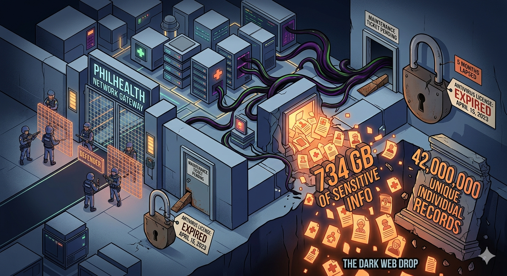

The PhilHealth breach wasn't a mystery. It was a maintenance ticket nobody filed.
It wasn't a zero-day exploit. It wasn't a nation-state threat actor operating out of a basement in Pyongyang. It wasn't a sophisticated supply chain attack that took months to engineer and years to detect.
It was an expired antivirus subscription.
On September 22, 2023, a ransomware group called Medusa broke into the Philippine Health Insurance Corporation, one of the country's most critical government agencies, holding the health records of over 103 million Filipinos. They moved quietly through the network. They staged the data. They set their price at $300,000. When PhilHealth refused to pay, Medusa did what ransomware groups do when they don't get what they want: they published everything.
Seven hundred thirty-four gigabytes of sensitive personal information, dropped onto the dark web like it was nothing.
Names. Medical records. Billing files. Employee IDs. Senior citizens' data. Government program records. All of it sitting there, downloadable, searchable, usable by anyone with a Tor browser and fifteen minutes to spare.
By July 2024, during congressional hearings, the National Privacy Commission placed the number of unique affected individuals at 42 million, drawn from a raw data dump of 181 million records with duplicates removed. Early post-breach estimates had varied. The final count was worse than the initial picture.
Sit with that number for a moment.
How Does This Happen to a 103-Million-Member Institution?
Slowly. Quietly. Without anyone raising a hand.
PhilHealth's antivirus license expired on April 15, 2023. Government procurement rules slowed the renewal process. By the time Medusa struck on September 22, the license had been lapsed for five months. The investigation didn't uncover a sophisticated intrusion. It uncovered a procurement delay.
A PhilHealth official confirmed the expired antivirus as "a potential vulnerability that may have facilitated the breach." The NPC had a different word for it: negligence.
That word matters legally. Under the Data Privacy Act of 2012, negligence that leads to unauthorized access carries penalties of three to six years imprisonment and fines up to 4 million pesos. The NPC didn't just investigate the breach. It launched a sua sponte investigation targeting responsible officials, with intent to recommend criminal prosecution.
This wasn't a case where attackers outsmarted the defenders. The defenders weren't at their posts.
What Medusa Actually Found
The NPC's Complaints and Investigation Division worked through 650 GB of compressed files from the Medusa data dump. Upon extraction, it ballooned to 734 GB. Among the data were:
- Patient medical records and billing files tied to PhilHealth claims
- Member records from government poverty-alleviation programs
- Records of rebel returnees under the Pamana program
- Employee files including payroll records, GSIS IDs, and regional office memos
- PhilHealth member IDs and mobile numbers tied to compromised workstations and application servers
PhilHealth and the DICT confirmed the core membership and claims database was stored separately and was likely not on the compromised systems. The breach hit workstations and application servers, not the central repository. That distinction matters for scope. But it does not change what was already out: detailed, sensitive, personally identifiable information from one of the country's largest public institutions, sitting on the open dark web.
The kind of information that, once leaked, cannot be taken back.
The Question Nobody Wants to Answer
Why did it take a ransom demand and a dark web drop for anyone to act?
PhilHealth knew about the attack on September 22. The NPC was formally notified three days later, on September 25. Under the Data Privacy Act, breach notification to affected data subjects is supposed to happen within 72 hours of an organization becoming aware of the incident.
When legislators raised this during congressional hearings, PhilHealth could not confirm that widespread individual notifications had gone out, even months after the breach. The agency admitted as much. Forty-two million people whose data was now circulating on the dark web had largely not been told.
The NPC was also investigating whether there had been active concealment, a separate criminal offense under the DPA carrying up to five years imprisonment and fines up to 1 million pesos.
The breach happened. The data was out. The people it belonged to were still waiting.
What This Tells Us About Institutional Cybersecurity in the Philippines
The PhilHealth case isn't an anomaly. It's a pattern with a name.
Organizations, government and private alike, tend to treat cybersecurity as a compliance checklist rather than an operational discipline. Antivirus gets renewed when someone remembers to renew it. Incident response plans exist in a folder somewhere. Security audits happen when they're mandated, not when they're needed. And then one day, Medusa shows up.
Ransomware groups don't target organizations because they're sophisticated. They target organizations because they know the window is often quietly open and nobody is checking.
The NPC put it plainly: PhilHealth had "implicitly acknowledged a degree of negligence." That acknowledgment came after the breach, after the dark web drop, after 42 million records were already gone.
Post-breach acknowledgment is damage control, not defense.
The Cost of Readiness vs. The Cost of a Breach
A serious cybersecurity training program for a government team costs a fraction of what one breach costs. Not just in fines, but in remediation, legal exposure, reputational damage, and the quiet erosion of public trust that follows when people find out their medical records are on the internet.
The NPC's administrative fines alone can reach up to 3% of an organization's annual gross income for grave infractions. Criminal prosecution of officials is now on the table. And for an agency like PhilHealth, the downstream consequences, fraud, identity theft, and scams targeting tens of millions of people, are impossible to fully calculate.
The breach happened in September 2023. The data is still out there.
There is no patch for a leak that has already happened. There is only preparation for the one that hasn't.
What Comes Next
The Medusa attack on PhilHealth was not an isolated event. The same month, the Philippine Statistics Authority suffered its own breach. In 2024, Jollibee Foods Corporation lost 11 million customer records. Toyota Makati lost over a terabyte of data. Robinsons Land and Maxicare followed. The private sector is not watching from a safe distance.
The attackers are not slowing down. The question is whether the organizations they are targeting are moving faster than their procurement cycles.
For government agencies, law enforcement teams, and regulated institutions, the answer starts before the breach. It starts with knowing what your exposure actually looks like, having a tested response when something goes wrong, and building a team that doesn't need a ransom note to understand the stakes.
Because when Medusa comes knocking, an expired antivirus is not a technicality.
It is an open door.
Need Cybersecurity Readiness Before the Breach?
I work with government agencies, law enforcement, and institutions that need stronger cyber maturity, practical training, and a clearer view of where their real exposure begins.
Request a Proposal or ConsultationReferences
- National Privacy Commission. (2023, September 25). Press Statement on Alleged PhilHealth Data Breach. https://privacy.gov.ph/press-statement-on-alleged-philhealth-data-breach/
- National Privacy Commission. (2023, October 7). NPC launches sua sponte investigation into PhilHealth data breach. https://privacy.gov.ph
- Rappler. (2023, October 7). PhilHealth officials may face law for negligence in 'staggering' data breach. https://www.rappler.com/technology/philhealth-under-investigation-negligence-data-breach-national-privacy-commission/
- CNN Philippines. (2023, October 7). Privacy body warns legal actions vs. PhilHealth officials over data breach negligence. https://www.cnnphilippines.com/news/2023/10/7/NPC-PhilHealth-probe.html
- GMA News. (2024). 2023 PhilHealth data breach affected 42M individuals — NPC. https://www.gmanetwork.com/news/topstories/nation/912661
- House of Representatives of the Philippines. (2024, July). House appropriations panel hearing on PhilHealth data breach notification. Congressional record, July 2024 session.
- Philstar. (2023, October 5). PhilHealth negligence eyed in data breach. https://www.philstar.com/headlines/2023/10/05/2301268
- Insurance Business Asia. (2024). PhilHealth hack potentially exposes 42 million people. https://www.insurancebusinessmag.com/asia/news/cyber/philhealth-hack-potentially-exposes-42-million-people-496453.aspx